Identity
verification
Read time: 12 minutes
Company:
Onfido — London
My role:
Product Designer
Timeframe:
Three months
Skills:
Research analysis, UX/UI design, workshopping, usability testing
The problem
Onfido's applicant form requires users to upload documents to verify their identity. For applicants this is a high friction point and was leading to around 25% of users dropping out. This needed to be reduced so we could:
- Keep current clients happy with our product
- Prove to potential clients that we could onboard their new customers easier
TL;DR
The solution
We made what is a complex and regulation heavy process into an easy to understand and helpful approach for users. We were able to reduce drop-off rates and show the value of well thought out design to the business by:
- Providing important information upfront to help applicant choices
- Only showing to applicants what they needed to know when needed
- Rethinking the underlying system logic to be more user-focused
- Designing with a mobile-first mindset
“This is perfect. The design team has done a beautiful job on this UX! I can see why you have such high completion rates.”
Read the in-depth casestudy below 🤓
A little context
Background
Who are we?
Onfido is an online identity verification platform that verifies people are who they say they are using physical sources (such as passports, driver's licenses, and utility bills) and biometric data (such as facial similarity and liveness detection). With sharing economy clients such as Uber and Deliveroo, household names such as Tesco, and fintechs like Monzo and Revolut using our service it’s of utmost importance that we continued to improve the onboarding speed of trusted people onto their platforms and weed out the fraudsters.
The applicant form
As part of the applicant form team (where users can supply details and upload their identity documentation), our main quarterly goal was to make it easier for applicants to provide us with the correct documents (with good image quality) on their first attempt. From our data we could see that the document upload step in the form had a drop-off rate of ~25% (slightly larger on mobile) so improving this part of the form would provide the most value to both applicants and the business. To measure the success of this project we set ourselves the following success metrics:
- Decrease document step drop off rate by 10%
- Decrease application re-open rate (due to incorrect documents being provided) by 10%
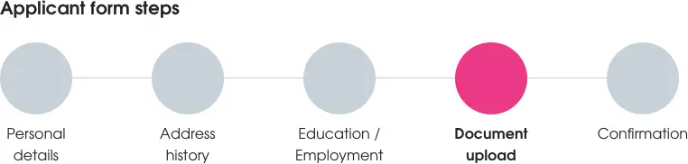
The existing document upload step
The document upload flow had been designed around three years ago when Onfido had first started, so even though there had been minor iterations made on it since, it was still using the underlying logic of this first designed system still. The existing system would advise the applicant to upload one document at the start then they would have to keep uploading documents until they had provided enough documentation to complete the check(s) – which lead to a frustrating experience for many.
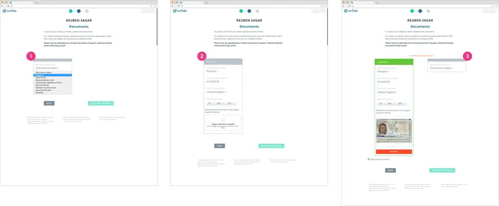
The beginning
Discovery
Who am I designing for?
As only the second product designer brought into the business my first priority was learn as much as I could about the online identity verification space – who are our users and clients, who are the competitors, what is the company's goals and vision, what are the regulatory constraints we have to work with, and how does this product integrate with other Onfido products?
In a fast moving start-up environment it’s sometimes just not possible to get a good amount of time for user research and validation, so I undertook a quick discovery phase to find out about users.
I broke the discovery phase into the following steps:
- Go through and analyse prior research
- Create a primary proto-persona based on internal research and knowledge
- Complete a task analysis of the applicant uploading documents
- Organising a sketching workshop to generate ideas
- Create design principles to guide the project
Understanding applicants
Using a combination of desk research, who our applicant form clients were and who were their users, and speaking to internal stakeholders it became clear that most applicants were applying for jobs in the on-demand service economy eg. ride-sharing drivers, food delivery riders, cleaners, handymen, etc. These applicants could be UK migrants applying for their first job, people looking to supplement their income with a second job, or full time gig economy workers. With these insights we put together our primary proto-persona called Marco — a recent migrant to the UK from Italy, with basic English skills, currently using his old iPhone to access the web, and looking for part-time work as a stop-gap measure until he can get a full-time job. We did have two other personas, but I didn't have the time to flesh these out with more research — though I made sure to keep them in mind when designing.
Task analysis
To gain a better understanding of the problem and how Marco could approach the document upload step I ran a task analysis. Breaking the analysis into before, during, and after uploading documents helped me to gain an understanding of the questions, concerns, and environment that could affect Marco’s journey through this part of the form.
Grouping these questions and concerns into three document upload phases (before, during, and after) it was clear that the existing document upload step didn't answer most of these concerns. Reviewing the analysis with the team allowed them to see where we were letting applicants down and enabled us to a better discussion about which user painpoints to prioritise for this project.
Painpoint prioritisation
BEFORE document upload
- "What documents do I need to provide?”
- “Are the documents I have going to pass my check?”
- “How many documents will I need to upload?”
- “What if I don’t have all of the documents right now?”
DURING document upload
- “What information is required to be seen on this document picture?”
- “Is all the document information needed included in my photo?”
AFTER document upload
- “What if I need to come back later to complete this step?”
Sketching and collaboration
I’ve always found doing a sketching workshop using the design studio method a great way to get stakeholders ideas out in the open and for them to really engage with the project – and as this was my first project I really wanted to get some different internal perspectives on the problem.
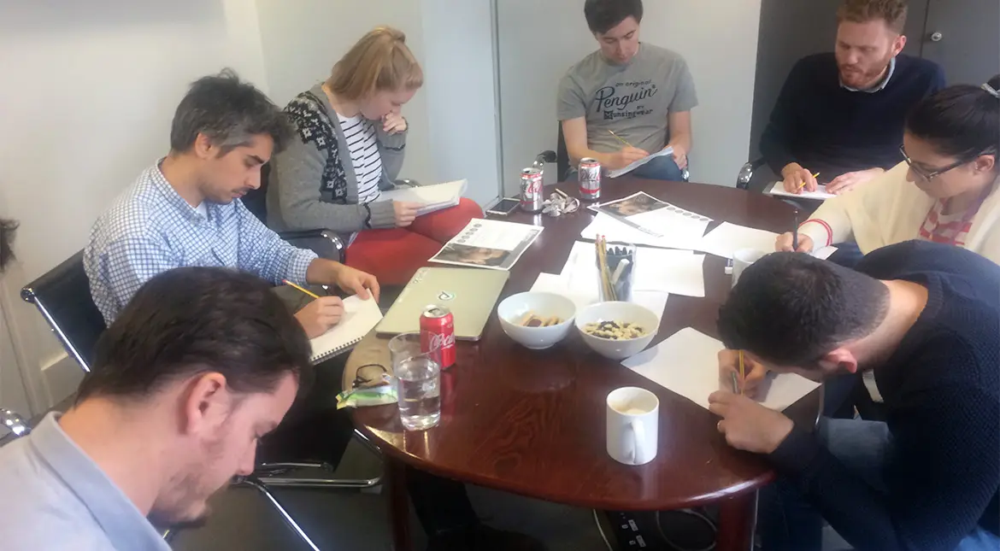
Workshop ideas:
- Documents like passports and driver's license are easier to process so we should be pushing applicants to provide those first
- Use of OCR technology to extract data from a supplied document
- A chatbot-like experience to guide the applicant
- If applicants don’t have the correct documents then offer them advice on how to obtain them
Guiding design decisions
Principles
After completing this upfront research work it was time to distill everything we had learned into a set of four principles which would become the foundation on which to guide our design decisions.
1. Better options now
Use information already provided by the applicant to surface better options at the right moment.
2. Don’t overwhelm
Limit options and choice until the user wants to see more. Don't let them see behind the "regulatory curtain".
3. We’re the experts
Surface important document requirements first to help users with decision making.
4. Words matter
Turn regulatory language into plain language so even non-native English speakers can understand.
Reducing complexity
The challenge
Onfido offers various identity checks to companies, who then pick and choose which of these checks they wanted to run on applicants. Each of these individual checks have their own regulatory rules to follow (eg. what documents are allowed), but once checks are combined with other checks then these rules start to overlap and the complexity headache begins.
Some of the things we needed to think about when combining different checks were:
- Which check takes a higher priority over other checks?
- What happens if a document supplied covers other check requirements?
- Is an additional document now needed to complete regulation requirements?
- How do we handle checks that have document overlaps with other checks?
- How do we show the smallest amount of document options to the user that they need?
- How do we make our solution scalable and easy to maintain for future regulation changes?
The major challenge in this project was to not expose these underlying complexities and regulatory constraints to the user. All of this behind the scenes logic had to be streamlined in the backend so only what the user needed to know was shown to them in the interface.
The source of truth
SeeWah (product manager) and myself put together a spreadsheet of all of these checks and mapped out the requirements for each. This became our “source of truth” and being able to visualise check requirements and how they overlapped really helped the development team come up with a new and better document-check logic schema. This schema was then refined as we continued the design phase.
Bringing it to life
Ideation
"What documents do I need?"
Applicants needed an idea of what documents they needed to upload rather than just keep uploading documents until the system didn’t ask for another. The existing document step could be described as a confusing and mysterious black box which provided no real feedback to the user that they had supplied the right documents – this needed to change.
My initial sketches took inspiration from online taxation software which were also tackling similar problems. I looked at highly acclaimed online products such as TurboTax and SimpleTax and found how they asked simple questions of the user upfront and then surfaced only the documentation users needed based on these answers.
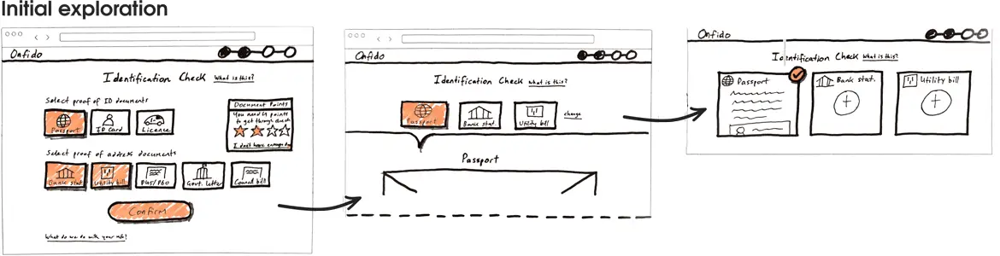
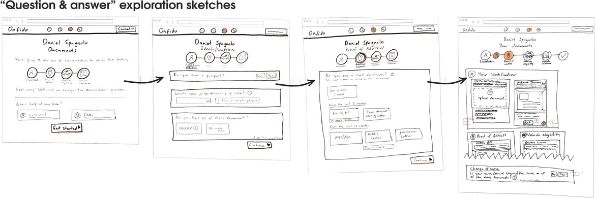
Bringing the team and other designers together for a design critique session of this first iteration proved invaluable. After presenting and discussing these first sketches we all agreed the question and answer format could be replaced with user data already known using:
- Information supplied by the user in previous steps of the applicant form
- Our own data showing popular documents used for particular checks
Seeing how this idea was reshaped with the help of others was a great reminder that presenting work early is the best way to remove your own biases and bring in different perspectives to help a design become better.
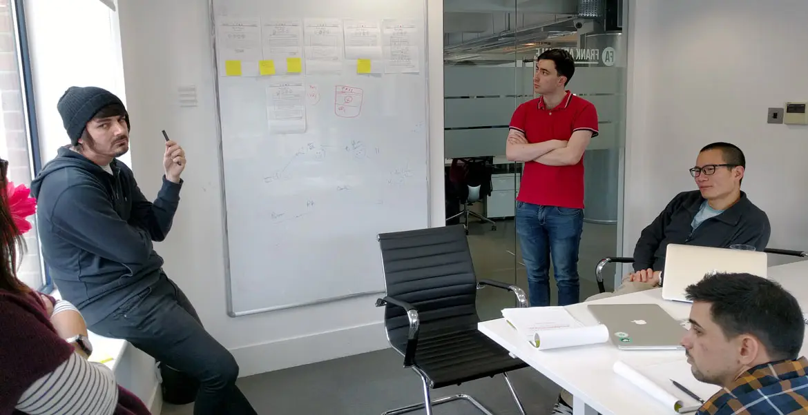
I applied these critique session changes into my next round of sketching – removing the question flow and starting the user on the document overview screen which was now customised with the documents the applicant most likely had based on our data and applciant information supplied on the form.
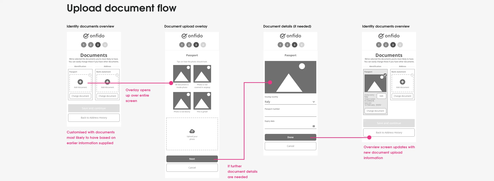
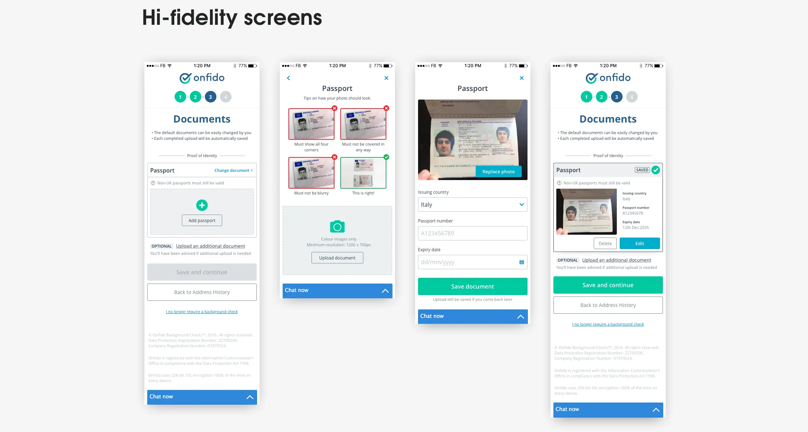
Support documentation
Due to regulation some documents types (like birth certificate) required supporting documentation to reach a level of identification accuracy. In the existing form when a user chose a primary document (that required support documentation) these support documents were added to the next list of document options – without the user being aware that these new list additions were related to their primary previous document selection!
We made this whole primary plus support document process into an easy to follow flow that showed upfront when support documentation would be needed. This allowed the user to see exactly how their primary document selection could lead to more documents to upload — no nasty surprises or confusion. After doing some quick user testing of two flows we chose to go with the flow that best supported users mental model of choosing and uploading a primary plus support document.
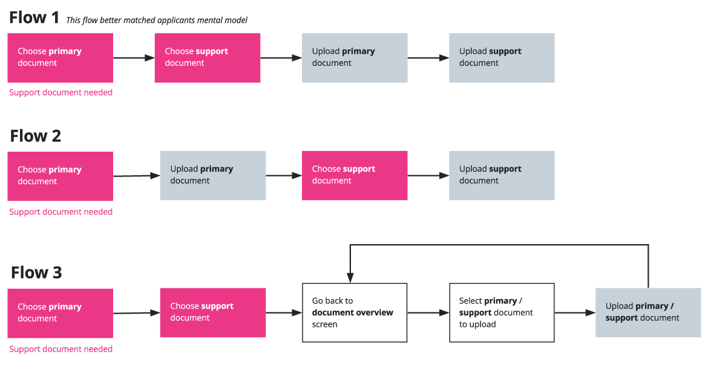
Support document understanding
A problem that we had here was how to show to the applicant that a primary document needed supporting documentation and how to show this secondary list of options? I decided to user test some ideas internally to see what reaction I would get.
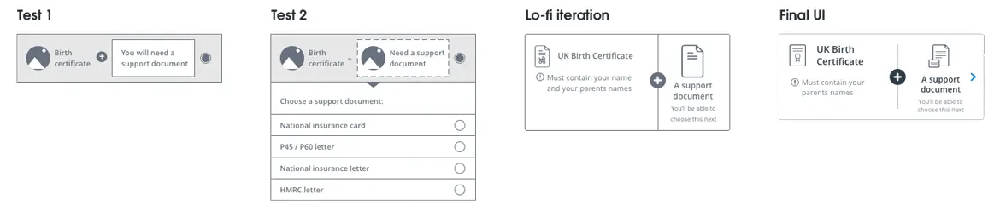
We tested two different support document ideas:
- A card with the primary document choice and empty support module
- The same as above, but when clicked support documents would drop down to choose from
The first option was received best (even though I would have loved to explore the second option more), so we iterated on it to make it a easier to understand visually.
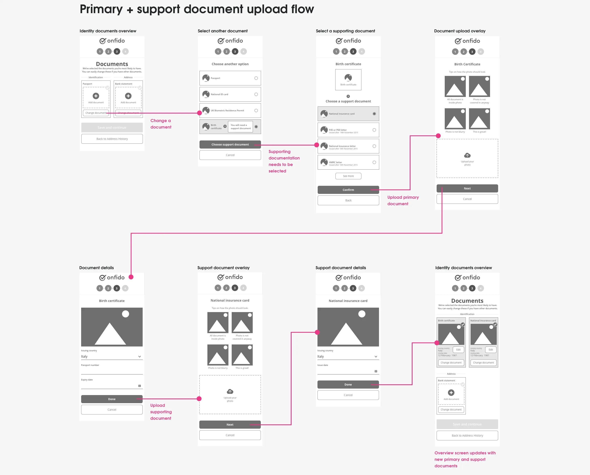
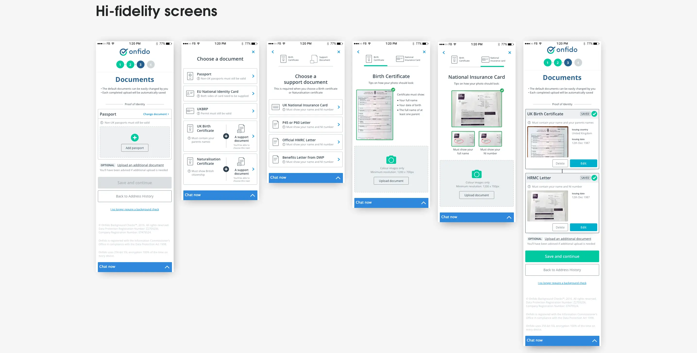
Legacy constraints
I now had a flow that matched the mental model of users, but I now came up against a major technical constraint – allowing users to upload their document right after selection could not be implemented easily with the legacy backend logic. As much as I knew from initial user testing that this was the flow that made more sense to users I reluctantly had to concede that we couldn’t implement this ideal flow right now as it would add too much time to the project — time that we didn’t have. Though I did make sure this was added to a priority list of items that needed to be looked at after launch.
Reducing options
Hick's law states that the more choices you present to a user the longer it will take them to reach a decision. This was especially true for the existing system as it presented far too many document options upfront to the user and with no indication of which option was best for them.
Using our existing document upload data we came to the decision to only show the five most popular document options to the user upfront. If the user's document choice was not listed they could then drill down further with a “more” button to view the next five. This meant that most users decision-making time was reduced as they could easily find popular documents in the list.
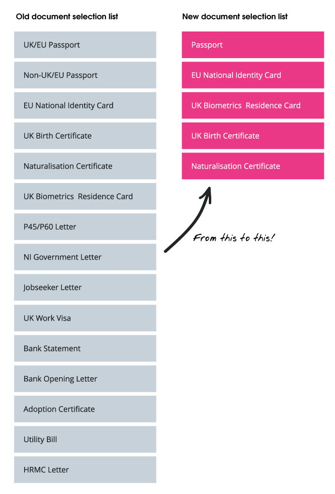
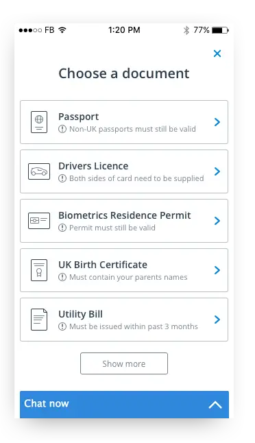
Supplying the right documents — first time
Applicant’s concern about not knowing if the documents they uploaded would be enough to pass a check was another of the issues we needed to address. This was also important from a business point of view as re-opening cases due to wrong or missing documents cost Onfido money and time.
Looking through the requirements for each document to pass checks we saw that these requirements could be broken down into two distinct groups – primary requirements and secondary requirements.
We decided to only surface the most important piece(s) of document data to the user at the point where they would be selecting a document – this allowed the user to only see the information related to making a decision about the document type they could use. Once they had selected the document type we then surfaced the next level of important data related to the selected document. These pieces of document data were broken into primary and secondary data types.
Primary information
- Document expiry date
- Expired document allowed/not allowed
- Valid document date ranges
Secondary information
- What to be shown on document
- Tips on how a photo should, and should not, look
Streamlining user focus
The existing step did all the changing, adding, and uploading of documents on the one screen. This meant choosing documents from long drop-down lists and uploading documents inside cramped narrow modules creating a very poor interaction experience on both desktop and mobile — and also creating an almost claustrophobic feeling on the screen. We decided to clear away all of these distractions by moving to a full screen overlays when the user was making choices or uploading documents. This allowed the user to focus on only what they needed to be doing in the moment and allowed us to be able to better present options and assistance to them as there was more screen real-estate available.
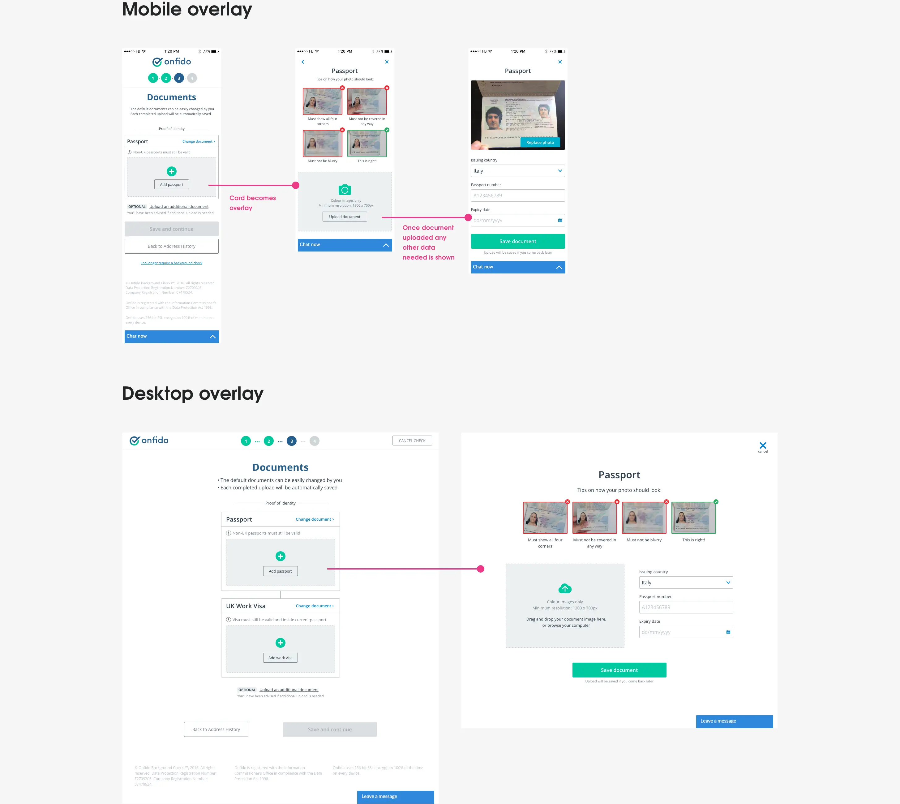
"Is my document photo good enough?"
Most people aren't the best photographers so getting them to take a picture of a document comes with the possibility that important information may be missing eg. parts of documents out of frame, glare that makes a number unreadable, a finger partly covering numbers etc. Onfido used machine learning to read information off of documents and so missing information was something we wanted to eradicate as much as possible from supplied images.
Going through our data for each document type we were able to see the main reasons for photo quality failure. Using these insights we were able to present to the applicant helpful tips and advice on how to take the best picture regarding the document they were about to upload.
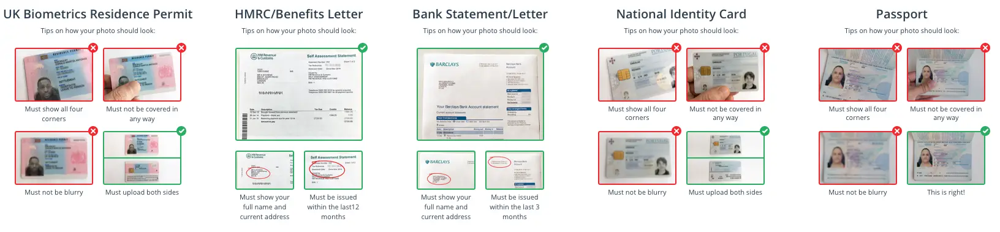
Usability testing
Valuing empathy
Deliveroo testing
After the initial positive feedback from internal testing it was time for some external user testing. After discussing what we wanted to test and creating a higher fidelity mobile prototype we were lucky enough to spend a few hours at Deliveroo’s rider sign-on center conducting usability sessions.
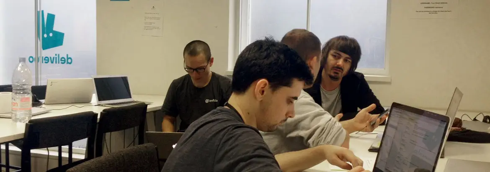
Being in an environment with real end-users of the product was a great learning experience for me. A lot of the riders spend the whole day going through rider training, information sessions, and filling in online forms which can easily become a stressful situation, especially if you really need this job to earn money. Seeing this firsthand made me appreciate that a lot of our users come to our product already stressed and so we needed to provide an experience that was as simple and stress-free as possible.
Usability insights
The main issues to come from the testing were then shared with the rest of the team and we prioritised the top five issues that needed addressing for the first release.
Issue 1: User confusion
Ability to change a document on the document upload card (after a document had been uploaded) caused hesitation and confusion for users as we now had an "edit" button and a "change" button. We decided once a user had uploaded a document successfully we would replace the “Change document” button with a success tick. This meant that the user now would be less confused with a “Change” and an “edit” button being displayed at the same time.
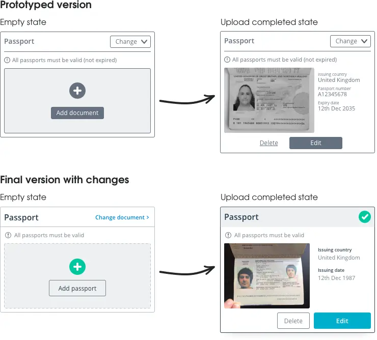
Issue 2: Saved feedback
Users expressed a need for some kind of confirmation that the document they had uploaded was successful and had been saved. We made two changes here:
- After the user had uploaded a document we showed an animation to let them know it had successfully uploaded and been saved.
- We replaced the “Change document” button with a success tick after a document had successfully uploaded (as above) — meaning the user could see at any time that this document had successfully uploaded even if they had been distracted and missed the upload success animation.
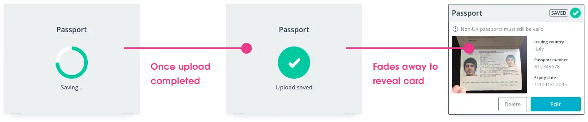
Issue 3: Adding another document
Some clients required other documentation (besides the ones needed for checks) to be uploaded. To allow for this we had included an "Add another document" link to the screen, but this option was confusing users (some were just clicking it to see what happened!). Adding an “optional” tag to the module and also adding some microcopy underneath advising applicant they would have been informed if other documents needed we thought would be a solution to this.
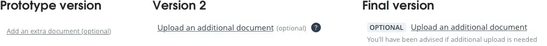
Issue 4: Document name uncertainity
Users wanted clarification of what certain document type names meant eg. “Government letter” and “Utility bill”. Instead of having generic options like “Government letter” or “Utility bill” which were ambiguous to users, we broke these options into the exact documents allowed eg. “Utility bill” option was broken into options of “Electricity bill”, “Gas bill”, and “Water bill”.
A more modern feel
The interface
Trust building
We all know that the look of a website should establish trust amongst users right away, but the existing applicant form didn’t really convey this (uploading your identity documents is a big deal after all!). It actually felt a little like a relic from the past and some real attention was needed to get that professional and trustworthy look.
Obviously I wanted to create a more professional and modern aesthetic, but I also had to design components that wouldn’t seem too out-of-place within the existing styling. So the first thing I did was establish some structure and consistency rules to the visuals:
- Introduced an 8pt grid system to keep a consistent vertical and horizontal rhythm
- Created a semantic and responsive typography system
- Reduced the many colours being used to only those required
- Made sure all colours and typography met (or exceeded) AA accessibility standards
- Designed larger touch target areas on all clickable/tappable components across all devices
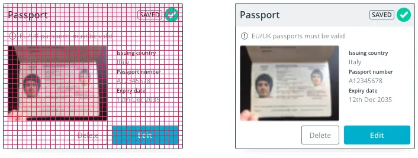
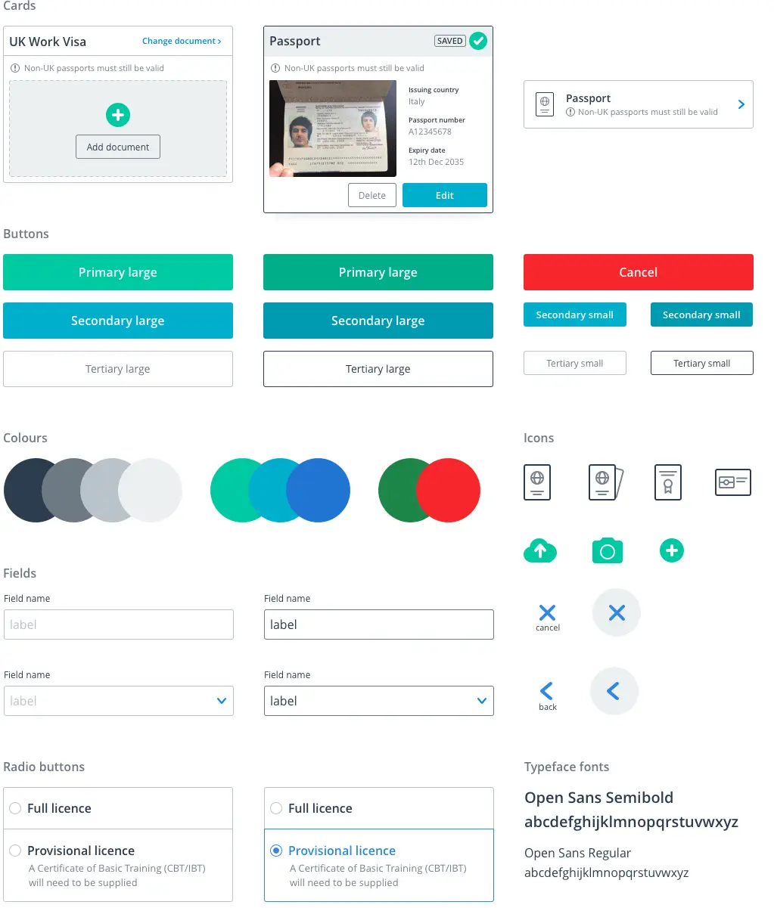
Final UI
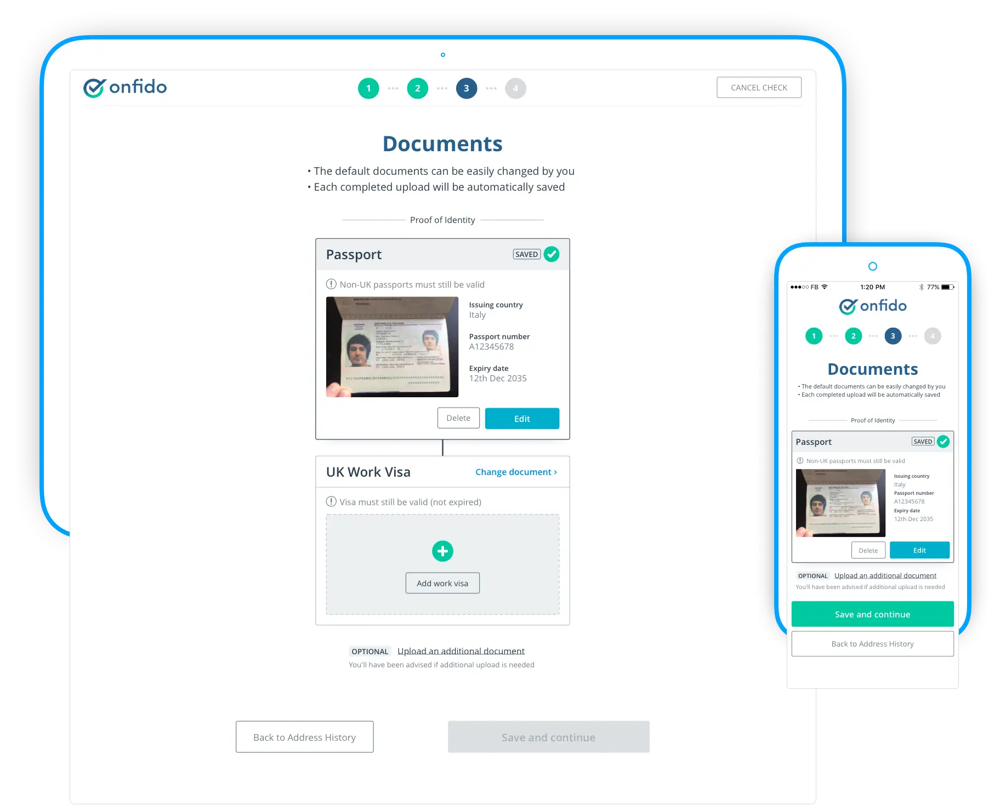
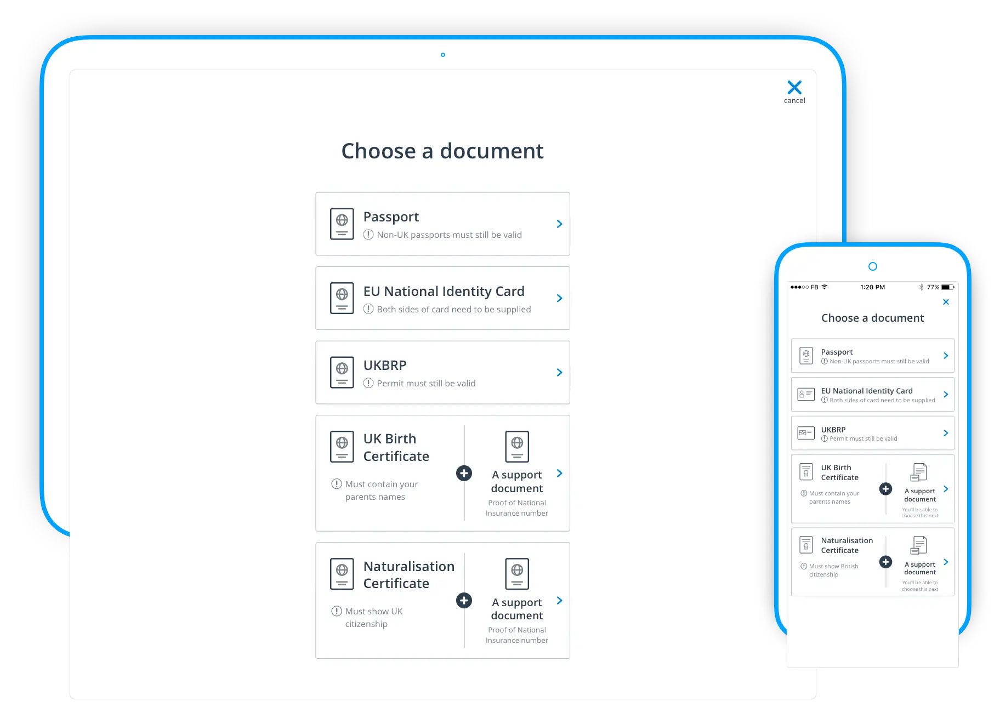
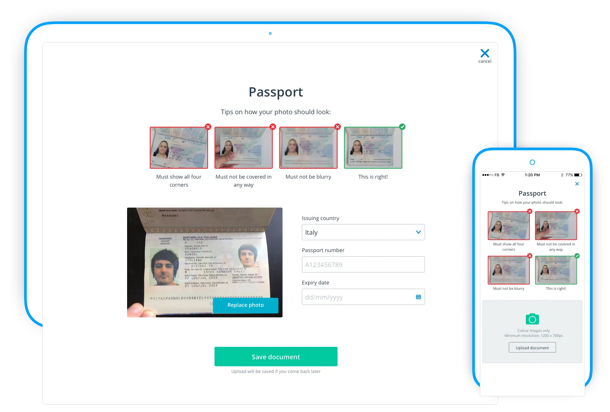
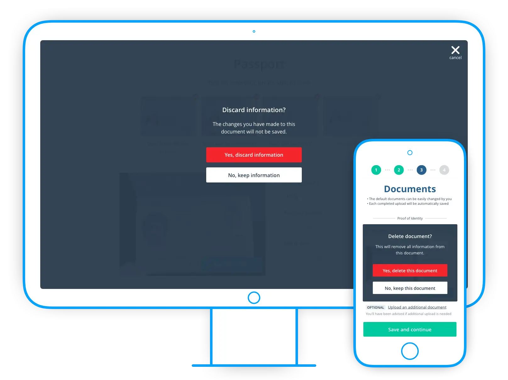
Document upload step
Outcome
The redesign of the document step has had a really positive impact since we launched it. Not only did we surpass all of the success metrics we'd set ourselves, but getting great feedback from large clients about how this was helping them and their users was also great.
-11%
in document step dropouts
-12%
in applicant form re-opens
+12%
in applicant form completions
“This update is great. Really clear, concise, and so easy to understand.”
Reflections
Early on in the project I learnt a valuable lesson in becoming fixated on one idea too early. I feel if I’d involved the team a little earlier in my exploration of the question and answer format I would have not have wasted a few days exploring and sketching this solution. A great reminder to show my work and thinking earlier, even if I’m not comfortable with it.
I also had a nagging doubt in the back of my head throughout the project of my understanding of the actual users. It wasn’t until I spent a day user testing at Deliveroo that I finally felt I had a proper understanding and empathy with the real users. I wish I had had the chance in the research phase to talk to actual users rather than just relying on previous company research. I learnt so much in that one day about how an applicant could be stressed or tired when using the applicant form.
Overall I felt this project really succeeded in making a positive impact on how people within Onfido thought about design. Everyone knew that this document step needed big improvements, but there were so many different solutions coming from different people that being able to bring a focus was needed — and a design process helped to bring this focus to find a solution in a collaborative and non-subjective way. It was great to hear from members of the sales team later that it was so much easier to pitch the Applicant form to clients when they had a great looking and usable product that they were confident in.